Two Wheels, One Soul
Freedom on every pedal stroke
Freedom on every pedal stroke
| Video | Event | Description |
|---|---|---|
| Learn More | Artistic Cycling | An indoor competitive cycling sport in which the objective for athletes is to perform various tricks while riding a bicycle. The bicyles used are fixed gear bicycles, with handlebars that can spin 360 degrees. The field in which competitions are conducted should have wooden surface, and dimensions that range from 9 x 12m to 11 x 14m. For international competitions, the maximum size fields are required. The rectangular court should have three concentric circles 0.5, 4, and 8m diameters. Artistic cycling routines can be performed in singles, in pairs, or four or six member teams. Each routine lasts for five minutes and riders perform as many moves as possible within the allocated time. Competitions are conducted in a format similar to that of gymnastics in which each routine performed is judged by a panel of judges. Each routine is scored based on several factors, like degree of difficulty of the moves performed and execution, and are awarded points. Teams are also deducted points for failure to complete certain moves. The individual or team with the most number of points at the end wins the competition. The highest level competition conducted for the sport is at the UCI Indoor Cycling World Championships. |
| Video | Event | Description |
|---|---|---|
| Learn More | BMX Freestyle | Introduced for the first time in the Tokyo 2020 Olympics, park freestyle BMX showcases the riders' creativity and technical expertise. Athletes perform tricks and stunts in a skatepark-like setting, utilizing ramps, rails, and other features to demonstrate their skills. With such a diverse range of cycling disciplines, the Olympic Games offer something for every cycling enthusiast to enjoy. As Olympic cyclist Laura Trott once said, "Cycling is a sport for everyone. It doesn't matter what size you are or your background; it's about pure talent and hard work." Australia's Logan Martin won the inaugural men's event. while Great Britain's Charlotte Worthington capture the first-ever women's gold. American Hannah Roberts entered as the favorite in the women's contest, but Worthington earned her gold medal by pulling out a never-been-done trick - a 360 backflip - in her second run to claim the win. |
| Learn More | BMX Racing | A fast-paced and exciting form of cycling. Riders navigate dirt tracks filled with jumps, berms, and obstacles while racing against each other. BMX racing requires explosive power, quick reflexes, and excellent bike-handling skills. Rain slickened the track and made an impact on the women's event, as two of the top contenders - Alise Willoughby of the United States and Laura Smulders of the Netherlands - crashed out in the semifinals. In the final race, Great Britain's Bethany Shriever, who had to crowdfund and work part-time to pay for her BMX career, narrowly defeated two-time reigning Olympic champion Mariana Pajon of Colombia for gold in an amazing upset. |
| Video | Event | Description |
|---|---|---|
| Learn More | Chariot | The shortest group race that we do at the velodrome, the chariot is just one lap long. Up to 7 riders line up side by side on the pursuit line and are held upright by holders. When the gun goes, it's an all-out dash for the line. The key to being good at this race is a great standing start and top-end speed. |
| Learn More | Cycle Ball | A sport with similar gameplay to that of association football, but is played with each player riding a bicycle. The sport, which originated in Germany, is also called 'radball'. Cycle ball is very popular in many European countries and Japan. Cycle ball is a team sport that is played between two teams with two players on each team. The sport can be played both indoors or outdoors, however, most competitions are held indoors. Cycle ball is played on a rectangular field about half the size of a basketball court. The entire field is surrounded by a small barrier that prevents the ball from going out-of-bounds. There are goals at both ends, which are of the same size as indoor football goals. A match is played in two 20 -minute periods. Players are allowed to move the ball only using the bicycle. The player's foot must not touch the ground, failing which results in a penalty. The objective of the sport is to score as many goals as possible. The team that scores the most goals wins the match. There are several club level tournaments conducted in major cycle ball playing countries every year. A major international level competition is conducted for the sport as a part of the the annual UCI Indoor Cycling World Championships. |
| Learn More | Cycle Polo | Was invented in 1891 and reached the Olympics as a demonstration sport in 1908. The sport has seen peaks in popularity in the 1930s and 1980s but has most recently been revived by the fixed-gear scene, giving the sport a new lease of life. This is similar to Polo, though played on bicycles instead of horses. There are two versions of bicycle polo: grass game & hardcourt bike polo. The sport was invented in County Wicklow, Ireland in 1891 by retired cyclist, Richard J. Mecredy. Traditional Bicycle Polo is played on a large rectangular grass field, but the faster hardcourt version played by less players on a smaller court is getting popular. The hardcourt version is called "Hardcourt Bike Polo" or "Urban Bike Polo", and is played by three players on a hard court surface such as for basketball tennis with a street hockey ball. |
| Learn More | Cycle Speedway | A bicycle racing sport which originated as an idea to replicate Motorcycle Speedway using bicycles. Unofficial races were conducted in the UK until the sport was codified in 1971. The bicycles used for cycle speedway have a single gear at the front and the rear, and do not have any brakes. The bicycles used are lightweight, and resembles a hybrid of road and mountain bikes. Riders wear a full body suit, with protective gear like helmets, and pads for knees, elbows, and hips. Races are mostly conducted outdoors on dirt tracks. Cycle speedway races are conducted in three different formats, individuals, pair, and in a team of four. The tracks are narrow, so for each race, a maximum of four riders can compete. For each race, riders have to complete four laps around the track. The rider who crosses the finish line first is declared as the winner of the race. Races are conducted as series. Each series consists of 8 to 24 races. Points will be awarded to the riders after each race, depending on what position a rider finished. In a single day of racing, multiple series will be conducted. The winner is the individual (or team) that gets the most points in all the series combined. Most cycle speedway competitions are conducted in UK. The sport is also has a world championships and European championships. |
| Learn More | Cyclo-cross | Combines the off-road cycling with obstacles and sections where riders often need to dismount and carry their bikes. These races typically take place in the autumn and winter seasons (the international or World Cup season is Semptember to January) and attract a diverse range of participants. Many short laps (2.5-3.5km or 1.5-2 mile) course on a variety of challenging surfaces. The course can feature pavement, wooded trails, grass, sand, mud, steep hills, and obstacles. The riders are required to quickly dismount, carry the bike over obstructions, run while carrying the cycle, and then remount and continue. Races are usually thirty to sixty minutes long, with the distance varying depending on the ground conditions. The emphasis is on the rider's endurance and bike-handling skills. |
| Video | Event | Description |
|---|---|---|
| Learn More | Elimination Race | A longer race of several track laps. At the end of each lap, the last competitor to complete the lap is eliminated from the race and has to leave the track. The number of laps may vary depending upon the number of competitors. Towards the end of the race the final few sprint to the finish to decide the winner. |
| Learn More | E-bike Racing | A form of competitive cycling where participants use electric bicycles to compete in various races and events. E-bikes are equipped with an electric motor that assists the rider's pedalling efforts, providing additional power to increase speed and overall performance. E-bike racing has gained popularity as a unique and exciting category within the broader cycling community. As technology continues to advance and interest in e-bikes grows, this form of racing is likely to further establish itself as a mainstream and accessible avenue for competitive cyclists. Different types of e-bike racing include mountain e-bike racing for off-road terrains, road e-bike racing on paved surfaces, and urban e-bike racing through city streets and parks. In e-bike racing, distinctions are made between different classes and categories of electric bicycles. Class 1 e-bikes, the most common, are pedal-assist bicycles with a maximum motor-assisted speed of 20 mph (32 kph). These bikes necessitate pedaling for the motor to provide assistance. Alternatively, Class 3 e-bikes, with a maximum motor-assisted speed of 28 mph (45 kph), may be allowed in certain events, offering additional speed capabilities. The landscape of e-bike racing is shaped by ongoing technological advancements in e-bike design and performance. Continuous improvements in motor efficiency, battery life, and overall technology contribute to the evolution of the sport. Regulatory bodies and event organizers play a crucial role in establishing standards and regulations to ensure fair competition and rider safety. |
| Video | Event | Description |
|---|---|---|
| Learn More | Flying Lap | So called because riders get a flying start. The flying lap is a 200m all-out sprint after riders have completed between one and three laps to build their speed. The time is taken as soon as they cross the 200m line and the clock stops when they cross the finish line. |
| Video | Event | Description |
|---|---|---|
| Learn More | Hill Climb | A type of ttime trial up a hill. The hill is usually quite stteep, but a short distance such as one to two miles. Each competitor takes approximately five minutes to reach the finish at this distance, requiring an all-out effort. Sometimes a hill sprint is included with another type of competition. |
| Video | Event | Description |
|---|---|---|
| Learn More | Ice Track Cycling | Uses a modified bicycle to race around a 400m frozen track. The tracks used for this sport can be an ice hockey rink, frozen lakes, rivers, etc. Each racer uses a bike with only one wheel drive at the back and a steering skate in the front with another cornering skate out to the right. The rear wheel is a 20" bike wheel with varying gears. There are many different types of tires used however spikes are not permitted on a 400m ice oval. The steering skate is attached to either a steering column or levers which the rider can use to make turns around the track. The cornering skate is designed to aid the rider get around left hand turns along the track. Ice Track Cycling is commonly found in the Netherlands where winter raes are hosted throughout its network of rivers. The sport is becoming increasingly popular due to the increase in accessibility of ice bikes. |
| Learn More | Individual Pursuit | This is the premiere event in junior endurance cycling, as the results of this ride against the clock is central to state team selection. Individual Pursuit races range from 1000m to 4000m. Riders begin the individual pursuit on opposite side of the track from a stationary start and race against the clock to ride the distance as fast as possible. In older age groups, these races are completed with time trial bars attached to the bike. It is a relatively short endurance track cycling event that pits riders against both the clock and each other. The competition begins with a 4-kilometer (16-lap) qualifying round. The fastest eight riders advance to the first round and are seeded accordingly as the number-one seed is matched against the number-eight seed, the number-two seed is paired against the number-seven seed, and so on. In round one, riders start on opposite sides of the track and pursue each other over a distance of four kilometers. The two winners with the fastest times advance to the gold-medal final, while the other two winners advance to the bronze-medal final. The winner of the finals is determined by either recording the fastest time or catching the opponent. |
| Video | Event | Description |
|---|---|---|
| Learn More | Keirin | One of the fastest track cycling events thanks to a motor pacer that sets the pace before releasing the riders to sprint for victory. Riders perform 8 laps of the 250m track initially following the motor-pacer, typically a small motorbike or electronic bike, that starts slowly (approximately 25kph) and gradually increases in speed (approximately 50kph) while riders line-up behind, ready to attack when they are released. Riders cannot attack over the top of the motor-pacer and have to wait until it exits the track, which will happen with 700m to go. Strong riders on the final lap of a Keirin can reach speeds in excess of 70kph approaching the finish line. Six riders start behind a derny, or motorized pacing bicycle, and jockey for position. They ride behind the derny at increasing speed for five laps (at the Olympics, this varies at other velodromes). After five laps, the derny pulls off and the riders race the last two laps. This is perhaps the fastest race in track cycling with speeds well over 70kph. |
| Video | Event | Description |
|---|---|---|
| Learn More | Madison | Named after Madison Square Garden in New York, a crucible of early track cycling. A relay of sorts, it is raced in teams of two inside a mass field. The aim of the game is to take maximum points on a sprint lap, which are held every 20 laps or gain a lap by attacking. Only one rider in a pair is racing at any given time so the other rider circles the track at the top of the banking waiting for their moment to 'tag in'. The handover isn't with a baton, instead, riders indicate the switch over with a hand-sling, propelling their teammate into the race. This usually happends to set up a sprint or attack. It is one of the most complex but gripping races of the schedule so be sure to tune in. Essentialy, it's a longer version of the points race, competed in pairs. Two-man teams contest the mass-start event, which is typically 50-60 km. (A 20 km women's Madison has been introduced for the 2016-17 season.) The best Madison teams will have one rider with great endurance, capable of a long push to take a lap, and one who specializes in sprinting and can take sprint points or make a sudden explosive effort to make a break. The Madison is a feature of six-day races, but it can also be a separate race, such as at World Cups and the World Championships. The Madison was a Summer Olympic event for men from 2000-2008, but was dropped ahead of the 2012 London Olympics. |
| Learn More | Meter Time Trial | Men's 1-Kilometer Time Trial: One of the simplest track events, riders start from a standstill and complete four laps of the track. The rider with the fastest time over the one-kilometer distance is declared the winner. 500-Meter Time Trial: The women's counterpart to the men's 1-Kilometer Time Trial, the 500-Meter Time Trial features women contesting two laps of a 250-meter track beginning from a standstill. The women who records the fastest time over a distance of 500 meters is declared the winner. |
| Learn More | Miss and Out | Easily the crowd favorite, this is an elimination race where the last rider on every lap is "pulled" from the race. The race takes place at the back of the pack, as one by one the rider whose rear wheel crosses the line last is eliminated. This can get hectic as riders fight desperately for position. This race is also known as "DEVIL TAKE THE HINDMOST" as occasionally a rider/riders like to play the "Devil". The devil likes to stay at the back of the pack until the final few meters of each lap, then eliminating an unsuspecting opponent at the last moment. The race continues until there are only three riders left, and then a sprint to the finish. |
| Learn More | Mountain Bike - 4X | Four cross riders compete at the same time. In this race, riders start in a group of four on a specially designed highly challenging downhill course. The races are short and can last between 25 seconds and one minute. Obstacles include a series of bumps, table tops, steps up, steps down (drop offs), moguls, cambered (bermed), or off-camber corners, and gap jumps. |
| Learn More | Mountain Bike - Downhill | One at a time on a downhill off-road course. The courses often include technical challenges such as jumps and tight corners. Rough sections and gaps have to be negotiated at high speed, using gravity to assist. Riders race one at a time and the winner is the one with the fastest time. |
| Learn More | Mountain Bike - XC | Cross-country race. This is a mass start event. Sometimes riders are arranged into age groups or categories and set off at different time. The course is a mixture of technical sections, climbs, descents, grass, trails, and rock gardens. Courses are usually arranged around a circuit and the winners are based upon the fastest time to complete the total distance required. |
| Learn More | Mountain Biking | An off-road cycling discipline that tests both the endurance and technical skills of the riders. Athletes navigate through rough terrains on mountain bikes, encountering steep climbs, descents, and obstacles. Cross-country and downhill are the two main mountain biking events in the Olympics. Tom Pidcock won gold in the men's event to deliver Great Britain its first Olympic medal in mountain biking. Historically known for its numerous medals and dominance in Olympic track cycling, Great Britain had been missing hardware in this discipline until Tokyo. |
| Video | Event | Description |
|---|---|---|
| Learn More | Omnium | The Omnium is the ultimate event for all-round track cyclists, comprising of six different events (scratch race, individual pursuit, elimination race, time trial, flying lap, points race) raced over two days that require a mix of power and endurance. It's cycling's Decathlon equivalent. The Omnium is a complicated event and requires consistency from the riders to achieve a good result. The goal of the Omnium is for riders to obtain as many points as possible. The rider with the highest point total at the end of the six events will win. Riders also have to finish each event of the Omnium to win overall. Riders receive points based on their placing in each event. For the first five events, scoring is as follows: Winner - 40 points, 2nd - 28 points, 3rd - 36 points, and so on. This pattern continues down to the 21st placed rider and below, who receive one point for finishing. During the final event, the Points Race, riders can add points from their total by gaining laps and via winning points in the sprints. If the scores are tied at the end of the Points Race, the places in the final sprint will be used to decide a winner. |
| Video | Event | Description |
|---|---|---|
| Learn More | Para-cycling | A cycle racing sport which was developed as an alternative for bicycle racing for disabled athletes. The sport which was developed in the 1980's is currently a major Paralympic sport. Para-cycling athletes are broadly classified into four major groups: visual impairment, mobility impairment, cerebral palsy, and handcycling. These four groups are further divided into 14 subcategories, which is the level at which individual races take place. In the visually impaired category, a tandem bicycle is used in which a sighted rider acts a pilot. In the handcycling category, athletes compete using specially designed cycles with hand pedals. Para-cycling races are conducted on both tracks and road courses. Some of the races conducted on road courses are, Road Race (for various distances for both men and women), Individual Time-trial Races, and Handcycling Relay - team event for both men and women. Some of the races conducted on tracks are, Tandem Sprint Races (only for men), Team Sprint (a mixed-gender event), 500m and 1000m time trial races, and Individual Pursuit races. Para-cycling was included as part of the 1984 Paralympic Games, and continues to feature races of several codes for both men and women. Para-cycling is also a part of the World Championships and World Cup events. |
| Learn More | Primes (Pre-mes) | Riders will also be racing for "Primes" or races within a race. During any race the official will ring the bell once letting the riders know that on that lap which ever rider comes across first will be rewarded with some cash. Primes are a great way for riders to get a little extra in their pockets. Sometimes riders can make more money collecting primes then winning the race. The primes are spectator primes meaning the more fans we have the more money we will payout in primes to the riders. Spectators can also make a donation to the "Prime Fund" in which they can pick the lap and race they want to have the prime. (You can even be cruel by donating a series of back to back to back primes for a minimum of $30 and watch their faces as they fight it out for the extra money.) |
| Learn More | Point-A-Lap | A tactical nightmare because it's usually a medium distance event meaning it doesn't favor sprinters or endurance riders. The leader of each lap, and only the leader, scores one point per lap with the exception of the final lap. On the final lap, the leader earns 3 points, second place earns 2 points, and third place earns 1 point. The rider with the most accumulated points wins. |
| Learn More | Points Race | It is a mass-start event which typically features 24 riders. The aim of the points race is to accumulate as many points as possible; points are scored during intermediate sprints, which occur every 10 laps. The first four riders across the line pick up five, three, two, and one point respectively. Points can also be earned by taking a lap from the field, for which 20 points are gained. Riders are awarded double points in the final sprint after the full distance. At the UCI World Championships, the distance is 40 km for men [160 laps], 25 km for women [100 laps]. Any rider or group of riders that lap the main field is awarded 20 points; while any rider of group of riders that is lapped by the main field loses 20 points. In the event of a tie, the rider who placed highest in the race's final sprint is given the advantage. The points race is used in the Olympic omnium, but there is no individual points race in the Olympic programme. |
| Video | Event | Description |
|---|---|---|
| Learn More | Road Criterium | Several laps on a short course, often on closed city streets. A criterium, or crit, is a race of several laps of usually less than 1km, often run on closed-off city streets. Race length can be determined by a number of laps or total time, in which case the number of remaining laps is calculated as the race progresses. The event's duration is typically an hour and is shorter than that of a traditional road race. The winner is the first rider to cross the finish line without having been lapped. There are sometimes awards for winning individual laps or age group categories. |
| Learn More | Road Cycling | It is the most popular form of cycling. In its modern form, road cycling is said to have been invented in Germany during the early 1800s. People indulge in road cycling as a form of recreation, racing, community, and utility cycling. It was competed in the Olympics for the first time during the 1896 Athens Olympics and is competed in two main categories in the Olympics during today's time. 1) Individual Road Race: Road race is a form of cycling held on paved roads. In road race, the participants mass start from a position and try to complete the race as fast as possible. Individual road race was first held in the Olympics during the 1896 Athens Olympics and was then contested for eight successive editions. It returned to the fold during the 1936 Berlin Games and has since been held in each edition. It was first contested in the women's cateory in the Olympics during the 1984 Los Angeles Olympics. 2) Individual Time Trail: An event where cyclists race against the clock i.e. they try to complete the race in a given time. Individual time trail was first contested in the Olympics during the 1912 Stockholm Games and was held in every edition till the 1932 Los Angeles Olympics before being discontinued. The event though returned during the 1996 Atlanta Olympics and has since been held in each edition. This event was first contested in the women's category during the 1996 Atlanta Games. Other than these, two more events - Team Road Race and Team Time Trial were also contested in the Olympics before being discontinued. |
| Learn More | Road Stage Race | Consists of several races, or stages, ridden consecutively. The competitor with the lowest cumulative time to complete all stages is declared the overall, or general classification (GC) winner. Stage races may also have other classifications and awards, such as individual stage winners, sprint points classification, and the "King of the Mountains " (or mountains classification) winner. Stages may also include individual or team time trials. Races can be held over several days. |
| Video | Event | Description |
|---|---|---|
| Learn More | Scratch Race | This is the simplest form of mass-start racing, fields of 24 riders race over a a pre-determined distance. The rider who crosses the finish line first wins. Men will contest 15 kilometers and women 10. As in the scratch race, endurance riders will try to take laps, and sprinters will try to hold the race together to compete for sprint points. Riders need to race intelligently, as well as having stamina and sprinting power, to ensure they collect as many points as possible. |
| Learn More | Skibobbing | A winter sport that uses a bicycle-type frame connected to skis called skibobs, together with a set of foot skis. In 1892, the idea of a bicycle with skis was first developed and even became a transportation means in the Alps and was only in the early 1950s that the first race was held. Other popular names of the sport are ski biking and snow biking. A skibob is a combination of a longer rear ski, which is fixed, shorter front ski serves control for steering, a saddle like that of a bicycle and a steering bar with handles complete the rig. It is important assemble the skibob in a more flexible design for smooth passage on a bumpy course. The skibob usually measures 1.9 to 2.29 meters in length. In an official race, a marked course which is usually from 3 to 5km long is run by the skibobbers, and whoever finishes the course first wins. In its early days, skibobbing was only a sport for those people who have weaker knees to do alpine skiing, though later on, the popularity of the sport caught the attention of those who were more physically able even outside the United States where it was said to have originally started. More often, people mistakenly refer to skibobs, ski bikes and snow bikes as all the same, but in relaity they are different terms. With the annual Skibobbing World Championship held regularly, the confusion is best hoped to be corrected in time. |
| Learn More | Snowball | Like in the Point-A-Lap, only the leader of each lap scores points, but the points increase in value as the race progresses. Winning lap one earns you 1 point while winning lap ten earns you 10 points. Unlike the Point-A-Lap, the snowball dows not place three deep on the final lap. In the event of a tie between riders, the rider who places better in the final sprint breaks the tie. |
| Learn More | Snowbiking | A snow sport which uses a bicycle with fat tires to more easily travel through snow. The bicycles used are called fatbikes or snow bikes, and the sport is sometimes referred to as "fatbiking". Fatbikes are becoming more popular, and there are many snow biking events around the world. Examples include the Snow Bike Festival in Gstaad, Switzerland and the annual Global Fatbike Summit in Wyoming, USA. There are also more extreme events such as the ultra marathon Iditarod Trail which can be accomplished on a bike. |
| Learn More | Split Scratch | The split scratch is a combination of a poitns race and a scratch race. There is a mid-race sprint that scores 4 places deep, 5,3,2,1 points. The final sprint scores 6 places deep, 9,7,5,3,2,1 points. The rider with the most points scored wins the race. Scratch race rules apply for laps gained/lost, tie-break is determined by the results of the second and final sprint. |
| Learn More | Sportive | A longer duraton event over typically 40-100 miles. Cyclists can choose whether to pace themselves against the clock or enjoy these as a pleasure ride. These are not formal races, although often timing is provided and riders can be grouped into different speed bands such as bronze, silver, or gold. These are rarely closed road events and often take smaller and quieter lanes. For the larger and longer events there is sometimes a time limit so that riders have to complete within a certain time - or be picked up by the sweeper wagon. |
| Learn More | Sprint | The match sprint is a race between two riders over three laps of the track. Unlike the team sprint, the riders don't go off full pelt from the gun. Although the goal is simple, get to the line ahead of your opponent, there are serious amounts of tactics involved. You will often see the pair engage in 'cat and mouse' tactics by doing a track stand in an attempt to force the other rider to come through and lead out the sprint instead of themselves providing a drafting opportunity going into the final bank. The team sprint, on the other hand, is an incredible demonstration of a track cyclist's strength and power. After a sinew straining standing start, two teams of either three for the men or two for the women, race on opposite sides of the track in a line. After the end of each lap, the rider on the front will peel off until one remains to battle it out to the line. |
| Video | Event | Description |
|---|---|---|
| Learn More | Team Pursuit | A combination of the Team Sprint and the Individual Pursuit. It is a race against the clock, four riders covering 4km for the men and three riders covering 3km for the women. Teams start on opposite sides of the track in a stationary position and ride as fast as possible. Teams will ride in a line as close as possible to each other to minimise drag and get a draft advantage, making it easier for the riders sitting behind. Once a rider has done their turn on the front they will swing up the track allowing the other riders to come through before tagging on to the back of the line. The time is taken from the third rider across the line so teams need to effectively work together to make sure they don't burn each outer out. It is a fine line between going hard enough to win the race, and going too hard and blowing your teammates up. If one team catches another the race is over and that team declared the winner. |
| Learn More | Time Trial | A race against the clock that may be solo or in small teams. Each team or persons sets off at intervals and is required to complete a measure distance as fast as possible. The events usually take place on public roads. Time trialists have to reduce air resistance as much as possible and generate sustained power for the duration of their event. Hence, the streamlined hats, cycles, and position on the cycle. Events are usually 10-mile, 25-mile, 50-mile, 100-mile, 12-hour, and 24-hour. Individual time trial: Courses may be out and back, around a circuit, or one way. Only out and back and circuit courses may be used for record purposes. Starting times are at equal intervals, normally one minute. Team Time Trial: Teams are made up of two or more riders. The distance, timing basis and number of riders who are required to finish is specified in the official race announcement. Times are based on any specified finishing position or on the sum of the times of any specified finishers. Courses may be out and back, around a circuit, or one way. Only out and back or circuit courses may be used for record purposes. The recommended minimum roadway width is 12m for an out and back course; otherwise a minimum of 8m is permitted. A warm-up area at least 2km long adjacent to the starting area is recommended. The turn around point for an out and back course is where the roadway is wide enought to permit the riders and any following vehicles to turn smoothly. |
| Learn More | Track Cycling | Track cycling is a popular game played on velodromes in the UK and around the world. It is an exciting and fast-paced sport that combines speed, skill, and strategy. It encompasses a wide range of events, each serving a unique purpose and generating excitement in its own way. Here are some of the most prominent track cycling events: 1) Sprint: The sprint event is a thrilling head-to-head race where riders compete over three laps to reach the finish line first. Known for its explosive power and tactical moves, this event showcases the pure speed and agility of the cyclists. 2) Keirin: Originating from Japan, keirin is a mass-start event where riders follow a motorized pacer, gradually increasing their speed until it pulls off the track. This event demands both strategy and endurance as cyclists jostle for position before making a final dash for victory. 3) Pursuit: Pursuit events are individual or team races against the clock, where participants aim to record the fastest time over a set distance. In individual pursuit, two riders start on opposite side of the track, while in team pursuit, teams of four riders acooperate to achieve the best time. 4) Omnium: The omnium is an exciting multi-event competition consisting of several different track cycling disciplines. It tests a rider's versatility and overall skill across a range of events, including scratch races, individual pursuits, elimination races, and more. |
| Video | Event | Description |
|---|---|---|
| Learn More | Unicycling | A unicycle is a cycling vehicle with a single wheel. The unicycle invention dates back to the late 19th century. Most well-known variety of unicycles has an edge with a seat, and is pedal-driven (human-fueled, immediate drive). Most of the time, unicycling has been seen a carnival event which has been performed at occasions to entertain the general audience in some bazaars or some parades, festivals, or road celebrations. There are many variations to a unicycle to suit various sports: Freestyle Unicycles, Trials Unicycles, Mountain Unicycles, Giraffe Unicycles, and Long Separation Unicycles. Other unicycling variations include the high jump and the long jump. |
| Learn More | Unknown Distance | A race in which the rider the rider who finishes first on the last lap wins. Except the "Unknown" has a small twist for no one knows, except the official, when that last lap will be. This is a very tactical race. You can gamble when the final lap will be and take a "Flyer" in which you break away from the field in the hopes that the bell will be rung while you are out in front. Some times riders, typically sprinters, will stay back in the pack keeping an eye on the official and allowing all the other riders to push the pace. Doing so allows them to get a running start on the rest of the field when the bell is rung and they shoot themselves around the other riders who are not up to speed yet. Both are very risky moves, but are very rewarding in you guess correctly. This is a very fast and exciting race. |
| Video | Event | Description |
|---|---|---|
| Learn More | Wheel Race | Sometimes called the "Handicap" Race, this event is extremely popular in Australia. Typically a national register of all riders handicap "marks" is kept, and regularly updted. The riders' distances spread out according to their rankings from the best rider who is known as the "scratch'. The handicapper (promoter) is trying to make all the riders cross the finish line together in a "blanket finish". all riders start from a standing start (a start where the rider is clipped in and held upright by a holder who gives a little push at the start to help the riders go faster). The race is only three or four laps as a rule, the riders desperately struggle to catch up with the "long markers", or slower riders who are given the greatest head start from the scratch man. |
| Learn More | Win and In | The Win and In is 15 laps long with sprints every 3 laps (5 total). The winner of each sprint "qualifies" for the final. Once the 15 lap portion is completed, the field exits the track and the five qualifiers are given three laps to go. Riders can attempt to win more than one qualifying sprint to reduce competition in the final. If this happens, the results of the sprint at the end of the 15 lap regular race portion determine the final places to score points towards the night's omnium. |
| Learn More | Win and Out | A very short and dangerous race, usually run as a full pack of riders who do a predetermined amount of laps to help jockey for position. The official then rings the bell and the rider who comes across the line first wins the race. During this time the official continues to ring the bell every lap so that the next rider across the next lap is seocnd, next lap third and so forth. Riders sometimes try to guess where they should finish and "sand bag" or sit in until that lap. Reason being if you go for the win and fail, then you have to continue to sprint for the next lap and so on. Most times the rider who comes in second on the first sprint lap fails to place at all. |
| Video | Event | Description |
|---|---|---|
| Learn More | 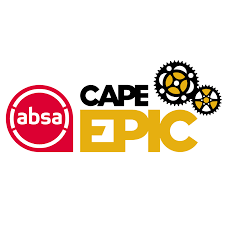 | Absa Cape Epic: founded by Kevin Vermaak is an annual mountain bike stage race held in the Western Cape, South Africa. First staged in 2004, it has been accredited as hors catégorie (beyond categorization) by the Union Cycliste Internationale. The eight day race consists of a prologue and seven stages, and typically covers more than 680 km (420 mi) with some 16,900 m (55,400 ft) of climbing. Professional mountain bikers from around the world encompassing up to 650 teams compete in teams of two. To qualify for a finish, teams have to stay together for the duration of the race. The race is also open to amateurs, who enter a lottery in order to gain a slot. The times taken to finish each stage are aggregated to determine the overall winning team in each category at the end of the race. The course changes every year, but the race has always taken place in the Western Cape. The race was acquired by The Ironman Group in August 2016. Advance Publications bought The Ironman Group in March 2020. |
| Learn More | 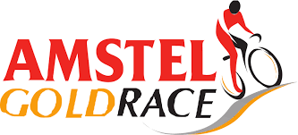 | Amstel Gold Race: a one-day classic road cycling race held annually since 1966 in the province of Limburg, Netherlands. It traditionally marks the turning point of the spring classics, with the climbers and stage racers replacing the cobbled classics riders as the favourites. Since 1989 the event has been included in season-long competitions at the highest level of UCI, as part of the UCI Road World Cup (1989–2004), the UCI ProTour (2005–2010), UCI World Ranking (2009–2010) and since 2011 of the UCI World Tour. It is the only one-day World Tour race staged in the Netherlands and is considered the most important Dutch road cycling event. Dutchman Jan Raas holds the winning record with five victories. Dutch beer brewer Amstel has served as the race's title sponsor since its creation in 1966. The name does not directly refer to the river Amstel, which runs through and near the city of Amsterdam. It took place without interruption until the COVID-19 pandemic. Since 2017, a Women's Amstel Gold Race is held, after a 14-year hiatus. The event is organised on the same day and on largely the same roads as the men's race and is part of the UCI Women's World Tour. |
| Video | Event | Description |
|---|---|---|
| Learn More | Boone Gran Fondo: said to have one of the most exciting courses of the entire Fondo series. The route carves through wooded climbs and descends over its three different distance options. Once back in the Town of Boone in North Carolina which shares its name with Trek's Boone cyclocross bike, riders can take advantage of one of the smaller fields for a Gran Fondo and enjoy the family feel. Early August is also meant to be a great time to be in Boone with 80-degree temperatures keeping things a little more comfortable on the climbs. Make sure you stay hydrated on the course though. The Gran Fondo National Series was conceived with this philosophy in mind, aiming to seamlessly blend the competitive spirit of bike racing with the camaraderie of group rides. Established in 2012, the Gran Fondo National Series has evolved into the largest and most competitive collection of Gran Fondo cycling events in the United States. One of the defining features of the Series is its unique timed-segment format. This innovation allows cyclists of varying skill levels to ride together, engage in friendly competition during timed segments, regroup to share stories, and relish the breathtaking scenery of some of the nation's premier cycling destinations. The series has successfully managed and produced over 60 gran fondos, including the official USA Cycling Gran Fondo National Championships. Recognized by the governing body of Olympic cycling in the Americas, these championships employ the timed-segment format and officially stand as the USA Cycling Gran Fondo National Championships. |
| Video | Event | Description |
|---|---|---|
| Learn More | 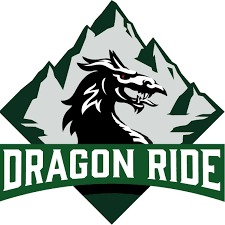 | Dragon Devil (Wales): Some extreme cycle races aren’t all about distance. This short little race clocks in just shy of 190 miles (300 kilometers), but it punishes even the toughest riders. When it’s all said and done, participants climb nearly 3 miles (5,000 meters) from start to finish. The brutal climbs culminate in Devil's Staircase a mind-bending road full of hairpin turns and an average gradient of 12.5%. It’s an ascent only for the fittest of the fit. It will have you so winded you might forget to notice you’re rolling through the beautiful Welsh countryside. This one-day Welsh sportive puts others to shame, pitting entrants against almost 200 miles of riding that includes mountains, fatigue and the unpredictable nature of the elements. Setting off from Port Talbot on the south coast, the route takes riders up into the lumpy lanes of the Brecon Beacons before continuing on to the mountains of mid-Wales. The ominously named Devil’s Staircase is the toughest climb of the bunch, but the Black Mountain, Devil's Elbow, and 10km-long Rhigos aren't the easiest either on a route that features almost 5,000m of climbing. There are also three shorter (and less hilly) distances on offer if the Devil sounds like your idea of hell. |
| Video | Event | Description |
|---|---|---|
| Learn More | 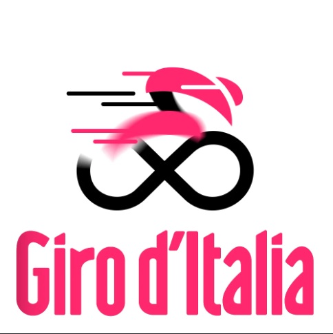 | Giro d'Italia: aka Giro (Tour of Italy) is an annual multiple-stage bicycle race primarily held in Italy, while also starting in, or passing through, other countries. The first race was organized in 1909 to increase sales of the newspaper La Gazzetta dello Sport, and the race is still run by a subsidiary of that paper's owner. The race has been held annualy since its first edition in 1909, except during the two world wars. As the Giro gained prominence and popularity, the race was lengthened, and the peloton expanded from primarily Italian participation to riders from all over the world. The Giro is a UCI World Tour event, which means that the teams that compete in the race are mostly UCI World Teams, with some additional teams invited as 'wild cards'. The Giro is one of professional cycling's three-week-long Grand Tours, and after the Tour de France is the second most important stage race in the world (the Triple Crown of Cycling denotes the achievement of winning the Giro, the Tour and the UCI Road World Championships in the same season). The Giro is usually held during May, sometimes continuing into early June. While the route changes each year, the format of the race stays the same, with at least two time trials, and a passage through the mountains of the Alps, including the Dolomites. Like the other Grand Tours, the modern editions of the Giro d'Italia normally conists of 21 stages over a 23- or 24-day period that includes two or three rest days. The rider with the lowest aggregate time is the leader of the general classification and wears the pink jersey. While the general classification gathers the most attention, stage wins are prestigious of themselves, and there are other contests held with the Giro: the points classification, mountains classification, young rider classification, and the team classification. |
| Learn More | Granfondo Stelvio Santini: This brutal course starts in Bormio and makes the most of the steep climbs of the Alps. Although the race’s tagline is ‘Know Your Enemy’, there are in fact two enemies you should know about: the first major climb comes just over the halfway mark, from Tovo up to the infamous Mortirolo, and ascends 1200m in only 12km. After a steep descent, the race then finishes with a leg-busting 1500m climb up to the Stelvio Pass on the Swiss border. The Stelvio is one of the top bucket list climbs for many cyclists, so this event is hugely popular for the mountain goats out there. |
| Video | Event | Description |
|---|---|---|
| Learn More | 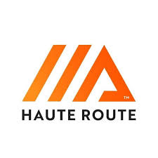 | Haute Route Alps: aka High Route or Mountaineers' Route - is the name given to a route (with several variations) undertaken on foot or by ski touring between the Mont Blanc in Chamonix, France and the Matterhorn, in Zermatt, Switzerland. First charted as a summer mountaineering route by members of the English Alpine Club in the mid-19th century, the route takes around 12+ days walking (or 7+ days skiing) for the 180 km from the Chamonix valley, home of Mont Blanc, to Zermatt, home of the Matterhorn. Originally dubbed "The High Level Route" in English by members of the hiking club, the term was translated into French when first successfully undertaken on skis in 1911. Since then the French term has prevailed. While the term haute route has become somewhat genericized for any of the many multi-day, hut-to-hut alpine tours, the "Chamonix-Zermatt Haute Route" remains the original. Besides the original Haute Route, there is nowadays also a "Walker's" Haute Route, which is an alpine hiking trail that follows a network of well-marked and signposted paths. The "Walker's" route stays below 3000 meters and takes advantage of the popular mountain huts and small inns and hotels in the villages along the way. In the spring, summer and fall, this route is safe, entirely non-technical (requires no ropes, crampons, or protection devices, unlike the actual Haute Route) and while challenging because of its daily elevation gains and distances, is achievable by any hiker in reasonably good physical condition. The original Haute Route has large portions of glacier travel, for which suitable mountaineering gear and experience is necessary. In the winter, ski touring gear is required, and depending upon the weather and route chosen, may require crampons, ropes and avalanche protection gear. |
| Video | Event | Description |
|---|---|---|
| Learn More | 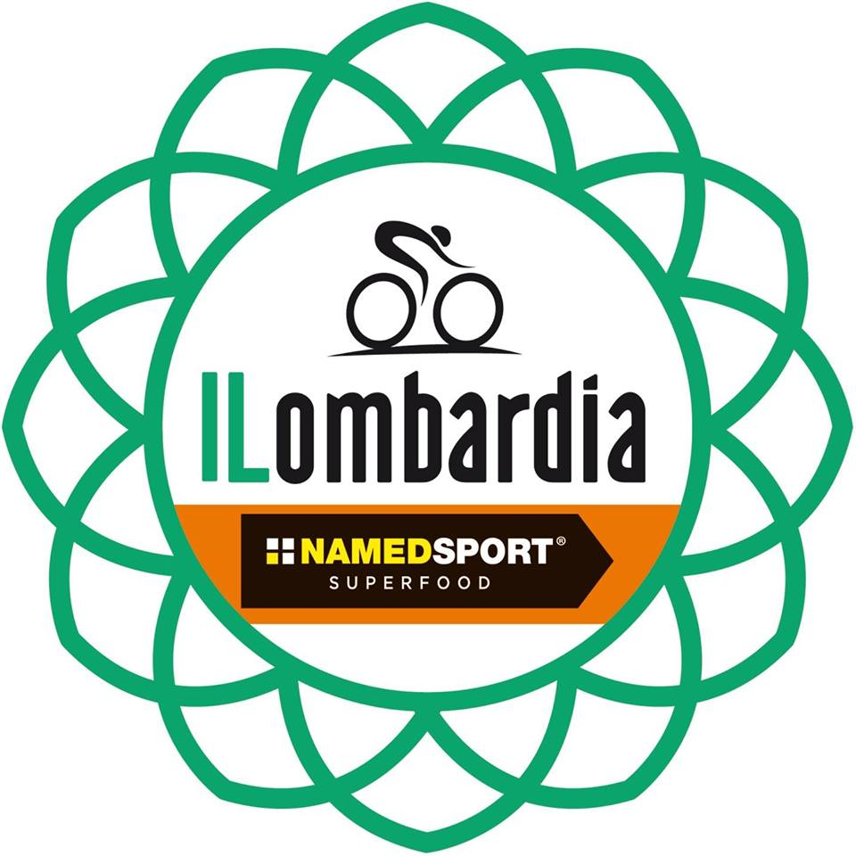 | Il Lombardia: aka Giro di Lombaria (English: Tour of Lombardy) is a cycling race in Lombardy, Italy. It is traditionally the last of the five Monuments of the season, considered to be one of the most prestigious one-day events in cycling, and one of the last events on the UCI World Tour calendar. Nicknamed the Classica delle foglie morte ("the Classic of the falling (dead) leaves"), it is the most important Autumn Classic in cycling. The race's most famous climb is the Madonna del Ghisallo in the race finale. The first edition was held in 1905. Since its creation, the Giro di Lombardia has been the classic with the fewest interruptions in cycling; only the editions of 1943 and 1944 were cancelled for reasons of war. Italian Fausto Coppi won a record five times. Because of its demanding course, the race is considered a climbers classic, favouring climbers with strong descending skills and a strong sprint finish. |
| Video | Event | Description |
|---|---|---|
| Learn More | 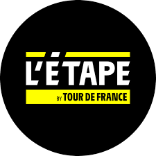 | L'Étape du Tour: Although the course for this race changes every year, whatever the route you know you will be in for a serious challenge. The event allows for amateur cyclists to have a go at one of the famous stages of the Tour de France. You will probably be taking in one of the iconic climbs in the Pyrenees or the Alps, and you will benefit from the same closed-road conditions that the professionals receive. Joining the peloton of 15,000 participants will make you feel like one of the legendary yellow jersey winners you’ve always watched on tv. |
| Learn More | 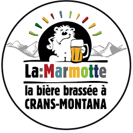 | La Marmotte: This cyclosportive is known fondly in France as ‘the Old Lady’ and includes some of the most legendary and challenging mountains covered in the Tour de France. The Col du Glondon, Col du Telegraphe, and Col du Galibier are iconic enough, but the most famous climb is the final Alpe d’Huez, with its iconic 21 hairpin turns. Finishing this event will require serious dedication and determination, but you will receive full bragging rights in the cycling community. The short option two days before focuses just on Alpe d’Huez, and sees some competitive, speedy hill-climbing. |
| Learn More | 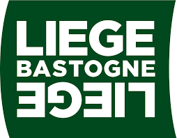 | Liège–Bastogne–Liège: aka La Doyenne ("The Old Lady") is a one-day classic cycling race in Belgium. First run in 1892, it is the oldest of the five Monuments of the European professional road cycling calendar; usually coming as the last of the spring classics. It is held annualy in late April, in the Ardennes region of Belgium, from Liège to Bastogne and back. The majority of the race's climbs are packed into the final 100km, providing a relentless barrage of climbing that barely allows any respite for tired riders. Despite its position as the final spring Classic, it can still be affected by bad weather to add to the riders' misery. Any riders completing the Liege challenge are worthy of praise. Its attritional climbs and sometimes testing weather make it a stern challenge that commands respect. There are 80, 150 and full-length 250km route options on offer and you can test yourself on the legendary Côte de La Redoute climb, the scene of many race-shattering attacks over the years. |
| Video | Event | Description |
|---|---|---|
| Learn More |  | Mallorca 312: a 312 kilometres (194 mi) long ride around the island of Mallorca. The Balearic island of Mallorca has become a mecca for road cyclists thanks to its favourable conditions, silky smooth asphalt and long, challenging ascents. The Mallorca 312 sportive allows entrants to experience everything that’s great about cycling on the island in a closed-roads, sunrise-to-sunset ride. The 2020 edition includes ascents of the Coll de Femenia and Coll Puig Major, but participants will be pleased to hear there aren’t any stings in the tail, with the majority of the 16,500ft of climbing is completed by the halfway point of the 312km ride. And for those that want to get a taste for Mallorca’s roads but can’t quite stomach the distance, there are slightly shorter 225km and 167km options on offer too. In recent years, the course has been adapted to make it a closed-road route. You will be well supported throughout, with 6 feed stations along the way, and the effort will be rewarded with stunning views around the island and through old towns such as Arta. |
| Learn More | 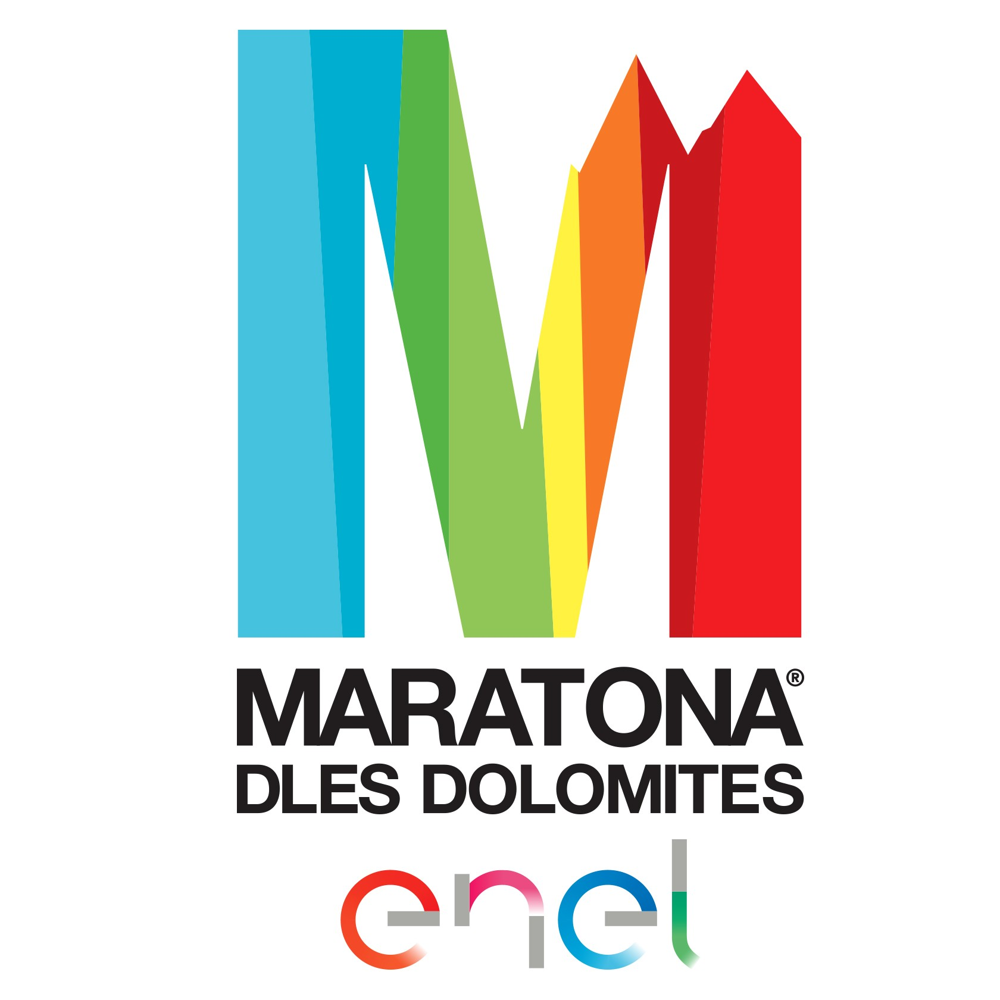 | Maratona dles Dolomites: When you read that the course takes in seven mountain passes in the Dolomites, it’s no wonder that the race’s theme is the mix between wonder and angst. Most of these climbs individually are tougher than you’d find in any race, so when they are placed back to back, you’re going to be left with sore legs. The Passo Giau is perhaps the toughest climb, seeing as it ascends 922m in only 9.9km (that’s an average gradient of 9.3%), ut it rewards you with incredible views down into the Ampezzo basin. If the long climbs haven’t emptied the tank enough, the ‘Mür dl giat’ (‘the cat wall’) is a short 360m burst up a slope with a 19% gradient. It is lined with supporters, food stalls, and musical entertainment, and is one of the main attractions of the race. |
| Learn More | 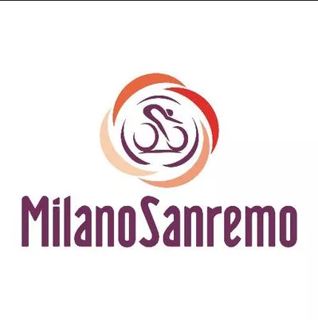 | Milan San Remo: (in Italian Milano-Sanremo), aka "The Spring Classic" or "La Classicissima", is an annual road cycling race between Milan and Sanremo, in Northwest Italy. With a distance of 298km (~185.2 mi) it is the longest professional one-day race in modern cycling. It is the first major classic race of the season, usually held on the third Saturday of March. The first edition was held in 1907. It is traditionally the first of the five Monuments of the season, considered to be one of the most prestigious one-day events in cycling. It was the opening race of the UCI Road World Cup series until the series was replaced by the UCI ProTour in 2005 and the World Tour in 2011. Milan-San Remo is considered a sprinters classic because of its mainly flat course (although the Poggio climb close to the finish has often been an opportunity for puncheurs & rouleurs), whereas the other Italian Monument race, the Giro di Lombardia, held in autumn, is consired a climbers classic. |
| Video | Event | Description |
|---|---|---|
| Learn More |  | Nove Colli: This is known as the ‘Queen of Granfondos’. Starting on Italy’s east coast, the Nine Hills of the course’s name provide some serious challenges. Some of the steepest sections reach a gradient of 18%, but you will create some spectacular memories along the way. The race has a rich heritage, and will be celebrating its 50th anniversary in 2020. To honour the 40th anniversary of Nove Colli in 2010, the world-famous Giro d’Italia used part of the course. The race is famous for its hospitality and for taking in a variety of Romagna’s most picturesque countryside. In the past, the 12,000 spaces have sold out within 4 minutes, so this is not one to be missed. |
| Video | Event | Description |
|---|---|---|
| Learn More | 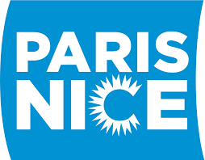 | Paris–Nice: is a professional cycling stage race in France, held annually since 1933. Raced over 8 days, the race usually starts with a prologue in the Paris region and ends with a final stage either in Nice or on the Col d'Èze overlooking the city. The event is nicknamed The Race to the Sun, as it runs in the first half of March, typically starting in cold and wintry conditions in the French capital before reaching the spring sunshine on the Côte d'Azur. The hilly course in the last days of the race favours stage racers who often battle for victory. Its most recent winner is American Matteo Jorgenson. One of the iconic races of cycling, Paris–Nice is part of the UCI World Tour and is the competition's first stage race in Europe each season, starting one day before its italian counterpart, the Tirreno-Adriatico / Race of the Two Seas. It is organized by ASO, which also manages most other French World Tour races, most notably cycling's flagships the Tour de France and Paris–Roubaix. The most successful rider is Ireland's Sean Kelly, who claimed seven consecutive victories in the 1980s. During the 2003 edition, Kazakh rider Andrey Kivilev died as a result of a head injury sustained in a crash. His death prompted UCI to mandate the use of helmets in all competitions of cycling, except for the last part of a race with an uphill finish. The rule was later changed to require helmets at all times. |
| Learn More | 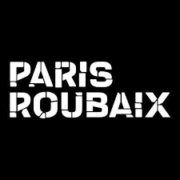 | Paris–Roubaix: is a one-day professional bicycle road race in Northern France, starting north of Paris and finishing in Roubaix, at the border with Belgium It is one of cycling's oldest races, and is one of the Monuments / clasics of the European calendar, and contributes points towards the UCI World Ranking. Paris-Roubaix is famous for rought terrain and cobblestones, or pavé (setts), being, with the Tour of Flanders, E3 Harelbeke and Gent-Wevelgem, one of the cobbled classics. It has been called the Hell of the North, a Sunday in Hell (also the title of a film about the 1976 race), the queen of the Classics or la Pascale: the Easter race. SInce 1977, the winner of Paris-Roubaix has received a sett (cobblestone) as part of his prize. The terrain has led to the development of specialised frames, wheels, and tyres. Punctures and other mechanical problems are common and often influence the result. Despite the esteen of the race, some cyclists dismiss it because of its difficult conditions. The race has also seen several controversies, with winners disqualified. From its beginning in 1896 unti. 1967, it started in Paris and ended in Roubaix; in 1966 the start moved to Chantilly; and since 1977 it has started in Compiègne, about 85 kilometres (53 mi) north-east of the centre of Paris. Since 1943, the finish has for the most part taken place in the Roubaix Velodrome. The race is organised by the media group Amaury Sport Organisation annually in mid-April. The course is maintained by Les Amis de Paris–Roubaix, a group of fans of the race formed in 1983. The forçats du pavé seek to keep the course safe for riders while maintaining its difficulty. Other than during the world wars and, in 2020, during the coronavirus pandemic (the April 2021 race was postponed to October), it has taken place every year from its inception. |
| Learn More | 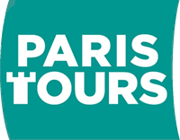 | Paris–Tours: a French one-day classic road cycling race held every October from the outskirts of Paris to the cathedral city of Tours. It is a predominantly flat course through the Chevreuse and Loire valleys; the highest point is 200m, at Le Gault-du-Perche. It is known as a "Sprinters' Classic" because it frequently ends in a bunch sprint at the finish, in Tours. For several decades the race arrived on the 2.7km long Avenue de Grammont, one of cycling's best-known finishing straits, particularly renowned among sprinters. Since 2011 the finish was moved to a different location because a new tram line was built on the Avenue de Grammont. Paris–Tours was first run for amateurs in 1896, making it one of the oldest cycling races in the world. It was organised by the magazine Paris-Vélo, which described that edition won by Eugène Prévost as, "A crazy, unheard of, unhoped for success". It was five years before the race was run again and a further five years (1906) before it became an annual event for professionals, with L'Auto as organiser. L’Auto ran the Tour de France (TDF) and Paris–Tours is still run by the Tour organiser, Amaury Sport Organisation. The race was part of the UCI Road World Cup from 1989 to 2004, and the UCI ProTour from 2005 to 2007. From 2008 to 2019 it was part of the UCI Europe Tour before joining the UCI ProSeries in 2020. |
| Video | Event | Description |
|---|---|---|
| Learn More |  | Race Across America: an ultra-distance road cycling race held across the United States that started in 1982 as the Great American Bike Race. RAAM is one of the longest annual endurance events in the world. All entrants must prove their abilities by competing in any of several qualifying events, completing a course within a specified time period. Currently, RAAM is several hundred miles longer than the Tour de France, and the two races differ in many other aspects. The courses of both races have varied over the years. However, in the Race Across America, the direction has always been from the west coast to the east coast of the United States, approximately 3,000 miles (4,800 km), making it a transcontinental event. More importantly, the race has no stages, i.e., it is a nonstop event from start to finish, with the fastest competitors needing slightly over 7 days to complete the course. |
| Learn More | 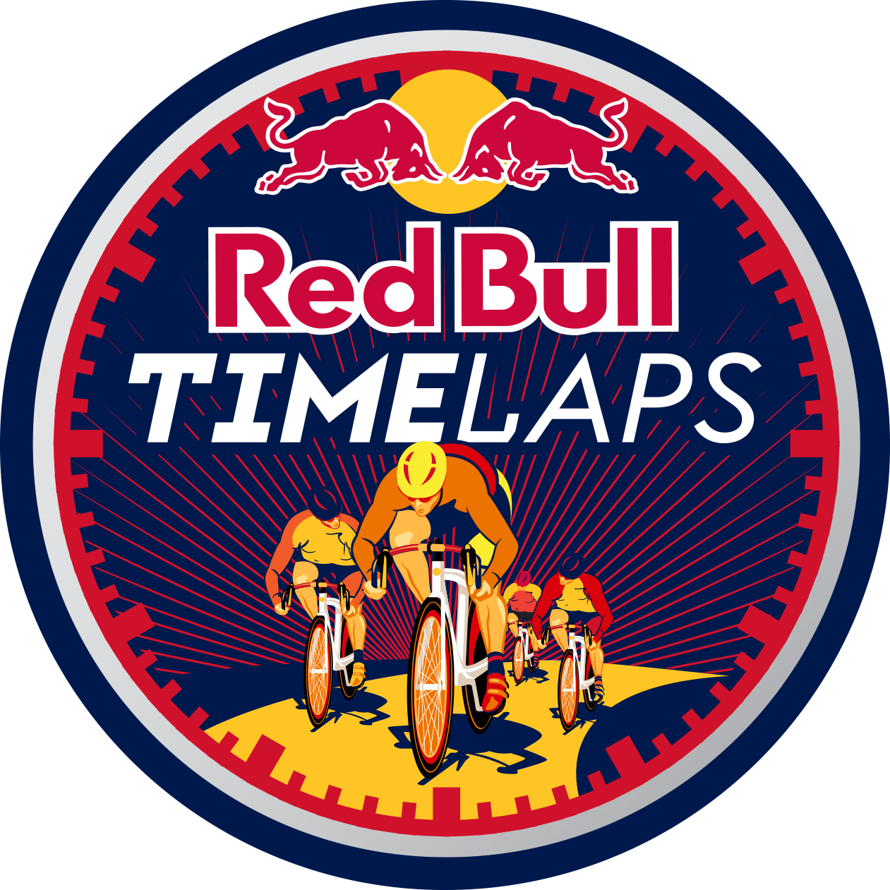 | Redbull Timelaps: The world’s longest one-day road cycling event returns in October, offering riders 25 hours of crit-racing action. The event takes place on the weekend in the UK when the clocks go back marking the end of British Summer Time, hence the extra hour of racing, and pits teams of four against each other to see who can do the most laps of a 6.2km course. The race follows a relay-style format, with only one rider out on the course at any one time, while a shorter route is used during the extra 'Power Hour' at 2:00am with laps counting as double. The event is a battle of endurance both on and off the bike, and getting the right rest and recovery is key between stints on the road. |
| Video | Event | Description |
|---|---|---|
| Learn More | 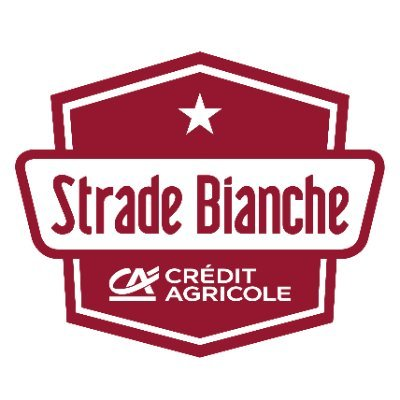 | Strade Bianche: is a road bicycle race in Tuscany, Central Italy, starting and finishing in Siena. First held in 2007, it is raced annually on the first or second Saturday of March. The name Strade Bianche (Italian for White Roads) stems from the historic white gravel roads in the Crete Senesi, which are a defining feature of the race. One-third of the total race distance is raced on dirt roads, covering 63km (39mi) of strade bianche, spread over 11 sectors. Despite its short history, the Strade Bianche has quickly gained prestige, and renewed interest in road racing on gravel and dirt roads as a specific skill and discipline. The event is part of the UCI World Tour, cycling's highest level of professional road races. It is organized by RCS Sport - La Gazzetta dello Sport, and is held the weekend before Tirreno-Adriatico as an early spring precursor to the cobbled classics in April. Swiss Fabian Cancellara holds the record with three wins. Also a three-time winner over the pavé of Paris–Roubaix and the cobbled Hilligen of Tour of Flanders, Cancellara rejected comparisons between the races, believing the "white roads" of the Strade "deserved appreciation in their own right". Thibaut Pinot described it as the "the sixth Monument" of Classic road cycling because of its unique parcours, difficulty and prestige. Since 2015, there has been a women's race, the Strade Bianche Donne, serving as the opening event of the UCI Women's World Tour. It is held on the same day as the men's race, on the same roads but at a shorter distance. Both events start and finish in Siena. |
| Learn More | 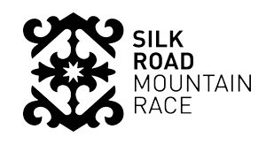 | Silk Road Mountain Race: The Silk Road was a key trading route for hundreds of years, connecting the entire Asian continent with the southern corridor of Europe. Now, the gravel tracks and Soviet-era roads of its Kyrgyzstan segment lie forgotten and in disrepair. The organisers of the Silk Road Mountain Race saw the terrain and thought it would make a perfect spot to hold a bike race, with competitors challenged to ride unsupported for more than 1,600km on roads where tarmac is a scarcity and the prize at the end is simply finishing. The race sets off from Bishkek and riders have until the end of the event’s after party in Cholpon Ata just 14 days later to be considered a finisher. And if the race isn't brutal enough, there’s a mere 27,000m of climbing to do before reaching the finish line. Distances between the three checkpoints were gruelling, while the overall mileage covered was roughly the same as riding from New York down to Florida – and if it wasn't a malfunctioning bike, illness or injury, the psychological torture of being alone for hours on end would prove too much for many a competitor. Riding solo or in pairs, racers took a bike, whatever kit they could carry, a SPOT tracker for emergencies, and a shedload of motivation. One of the race finishers was Pete McNeil, a 33-year-old from the UK. McNeil came in eighth, covering an average of 150km a day and finishing in 11 days, 11 hours and 44 minutes. |
| Video | Event | Description |
|---|---|---|
| Learn More | 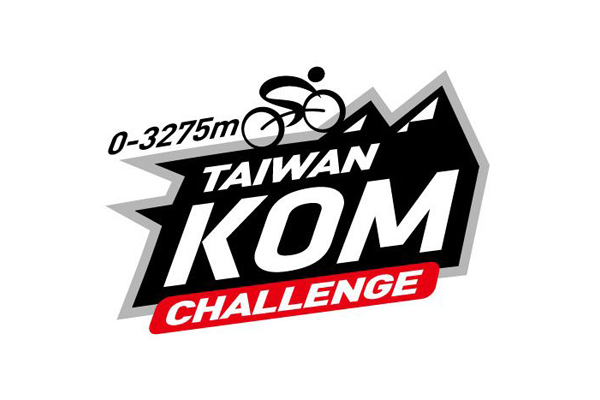 | Taiwan KOM Challenge: a one-day road cycling race held annually in Taiwan. Created in 2012, the event is recognized as one of the most difficult cycling races in the world due having nearly 3500m of climbing over a 105 kilometer course. Vincenzo Nibali, the 2017 winner, holds the record for the fastest time, with a time of 3:19:54. The Taiwan KOM is easily one of the toughest (and longest) hill climbs to enter, taking participants from sea level to an altitude of 3,275m over 105km of grinding ascents. A 5km section of downhill about three quarters of the way in provides a slight bit of respite, but the toughest section is reserved for the final 10km, where gradients peak at a nosebleed-inducing 27.3 percent. |
| Learn More | 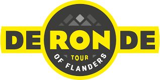 | Tour of Flanders: (Dutch: Ronde van Vlaanderen), aka De Ronde ("The Tour"), is an annual road cycling race held in Belgium every spring. The most important cycling race in Flanders, it is part of the UCI World Tour and organized by Flanders Classics. Its nickname is Vlaanderens Mooiste (Dutch for "Flanders' Finest"). First held in 1913, the Tour of Flanders had its 100th edition in 2016. Today it is one of the five Monuments of cycling, together with Milan–San Remo, Paris–Roubaix, Liège–Bastogne–Liège and the Giro di Lombardia. It is one of the two major Cobbled classics, anticipating Paris–Roubaix, which is on the calendar one week after the Tour of Flanders. The event had its only interruptions during World War I and has been organized without hiatus since 1919, the longest uninterrupted streak of any cycling classic. Although it is still over a hundred years old, the Tour of Flanders is the youngest of the five Monuments. Its route is one of the toughest: a series of short, sharp hills and cobbled sections constantly whittle down the peloton and help to form attacks, breaks and splits. Riders jostle for position before the base of each climb, and then use pure strength to make it out of the top in the lead – only to do it all again shortly afterwards. It's a fascinating race to watch unfurl and always provides great drama and a worthy winner. |
| Learn More |  | Tour de France: an annual men's multiple-stage bicycle race held primarily in France. It is the oldest and most prestigious of the three Grand Tours, which include the Giro d'Italia & Vuelta a España. The race was first organized in 1903 to increase sales for the newspaper L'Auto (which was an ancestor of L'Équipe). It has been held annualy since, except when it was not held from 1915 to 1918 and 1940 to 1946 due to the two World Wars. Traditionally, the bulk of the race is held in July. While the route changes each year, the format of the race stays the same, and includes time trials, passage through the mountain chains of the Pyrenees & Alps, and (except in 2024 due to preparation for the 2024 Summer Olympics) a finish on the Champs-Élysées in Paris. The modern editions of the Tour de France consist of 21 day-long stages over a 23 or 24 day period and cover approximately 3,500 kilometeres (2,200 mi) in total. The race alternates between clockwise and counterclockwise circuits. Twenty to twenty-two teams of eight riders usually compete. All of the stages are timed to the finish and the riders' times are compounded with their previous stage times. The rider with the lowest cumulative time is the leader of the race and wears the yellow jersey. White the general classification attracts the most attention, there are other contests held within the Tour: the points classification for the sprinters (green jersey), the mountains classification for the climbers (polka dot jersey), young rider classification for riders under the age of 26 (white jersey), and the team classification, based on the first three finishers from each team on each stage. Achieving a stage win also provides prestige, often accomplished by a team's sprint specialist or a rider taking part in a breakaway. |
| Learn More | 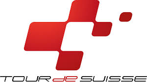 | Tour de Suisse: English: Tour of Switzerland - is an annual road cycling stage race. Raced over 8 days, the event covers two weekends in June, and along with the Critérium du Dauphiné, it is considered a proving ground for the Tour de France, which is on the calendar approximately two weeks after the end of the Tour de Suisse. Since 2011 the event is part of the UCI World Tour, cycling's highest level of professional races. From 2021, a women's race has been held at the same time, with the event joining the UCI Women's World Tour from 2023. The race was first held in 1933 and has evolved in timing, duration and sponsorship. Like the Tour de France and the Dauphiné, the Tour de Suisse has several stages with significant mountain climbs in the Swiss Alps and at least one individual time trial. Several winners of the Tour de Suisse have also won the Tour de France, including Eddy Merckx & Jan Ullrich. In 2005 the Tour de Suisse was included in the inaugural UCI Pro Tour and organisers moved the race to earlier in June. The first winner of the race was Austrian Max Bulla in the 1933 edition. The rider with most wins is Italian Pasquale Fornara with 4 wins in the 1950s. The most recent winner is Mattias Skjelmose, who won for the first time in 2023. |
| Learn More | 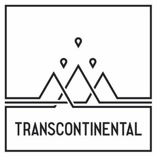 | Transcontinental Race: an annual, self-supported, ultra-distance cycling race across Europe. It is one of the world's toughest ultra-endurance races. The route and distance varies for each edition between about 3,200 and 4,200 km, with the winners generally taking 7 to 10 days. Interest in the race grew rapidly from 30 people starting the first edition of the race in 2013 to over 1,000 people applying for a place in the fourth edition in 2016, 350 of whom were successful; since then, these numbers have been reasonably stable. It is not a stage race, the clock never stops from the moment the riders leave the start to the moment that they reach the finish, so it is a long individual time trial. Riders must therefore strategically choose how much time to devote to riding, resting, and refuelling each day. Being self-supported or unsupported means that drafting is not allowed, receiving any form of support from other racers is not allowed, nor is it from friends or family; all food, accommodation, repairs, etc., must be purchased from commercial sources. Despite being an individual time trial, there is a mass start, which has most often been in northwestern Europe, two to four intermediate control points must then be reached, and the finish has most often been around southeastern Europe. The 2019 edition went from east to west. |
| Video | Event | Description |
|---|---|---|
| Learn More | 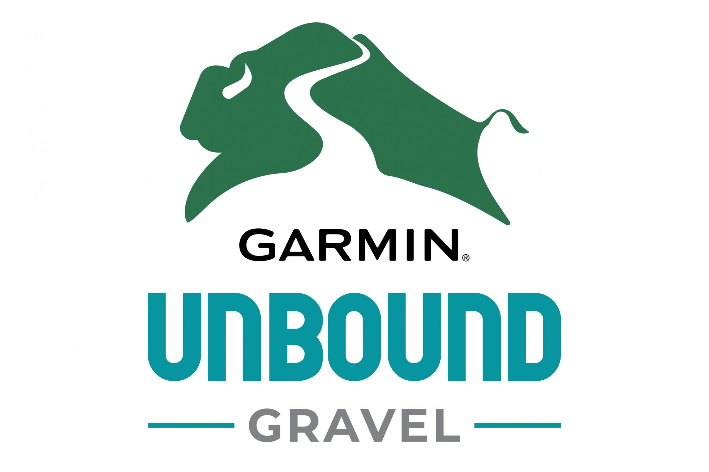 | Unbound Gravel: formerly Dirty Kanza XL; The Americans are renowned for going big, and the Dirty Kanza XL is no exception. The invitation-only race is a 350-mile gravel grinder set in the deepest depths of Flint Hills, Kansas. Participants have just 36 hours to finish the self-supported ride, which includes more than 15,000ft of elevation. Those not lucky enough to receive an invite are still able to take on the slightly shorter but just as tough Dirty Kanza 200 - a 200-mile loop around the dusty gravel tracks of Kansas prairie land. |
| Video | Event | Description |
|---|---|---|
| Learn More | 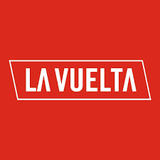 | Vuelta a España: English: Tour of Spain is an annual multi-stage bicycle race primarily held in Spain, while also occasionally making passes through nearby countries. Inspired by the success of the Tour de France and the Giro d'Italia, the race was first organised in 1935. The race was prevented from being run by the Spanish Civil War & World War II in the early years of its existence; however, the race has been held annually since 1955. As the Vuelta gained prestige and popularity the race was lengthened and its reach began to extend all around the globe. Since 1979, the event has been staged and managed by Unipublic, until in 2014, when the Amaury Sport Organisation acquired control. Since then, they have been working together. The peloton expanded from a primarily Spanish participation to include riders from all over the world. The Vuelta is a UCI World Tour event, which means that the teams that compete in the race are mostly UCI WorldTeams, with the exception of the wild card teams that the organizers can invite. Along with the Tour de France and Giro d'Italia, the Vuelta is one of cycling's prestigious Grand Tours. First held in 1935 and annually since 1955, the Vuelta runs for three weeks in a changing route across Spain. While the route changes each year, the format of the race stays the same, with the appearance of at least two time trials, the passage through the mountain chain of the Pyrenees or the Cantabrian Mountains, and the finish in the Spanish capital Madrid. The modern editions of the Vuelta a España consist of 21 day-long stages over a 23-day period that includes 2 rest days. It was originally held in the spring, usually late April, with a few editions held in June in the 1940s. In 1995, however, the race moved to September to avoid direct competition with the Giro d'Italia, held in May. As a result, the Vuelta is now often seen as an important preparation for the World Championships, which moved to October the same year. However, starting in 2023 this is no longer the case as every fourth year the Worlds will now be held in August. A Vuelta was also organized in August and September 1950. The race now usually starts in late August, but the 2020 race started in October due to a delay caused by the COVID-19 pandemic. All of the stages are timed to the finish; after finishing, the riders' times are compounded with their previous stage times. The rider with the lowest aggregate time is the leader of the race and gets to don the red jersey. While the general classification garners the most attention, there are other contests held within the Vuelta: the points classification for the sprinters, the mountains classification for the climbers, the combination classification for the all-round riders, and the team classification for the competing teams. La Vuelta Femenina, a women's edition of the race, was first held in 2023, part of the UCI Women's World Tour. This follows smaller races staged in conjunction with the Vuelta between 2015 and 2022. |